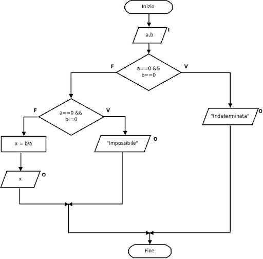

Unità 4:
1. Programmazione
La programmazione è una delle competenze più potenti e fondamentali del nostro tempo.
In un mondo sempre più digitalizzato,saper scrivere e comprendere codice è diventato essenziale non solo per gli sviluppatori,
ma per chiunque voglia capire come
funzionano le tecnologie che usiamo ogni giorno.
Ma la programmazione non è solo una questione di scrivere righe di codice; è un vero e proprio processo di problem-solving,
che richiede pensiero logico e creativo.
Ogni applicazione che utilizziamo sul nostro smartphone, computer o qualsiasi altro
dispositivo nasce da un'idea che qualcuno ha deciso di realizzare attraverso il codice.
È come una lingua che ci permette di
comunicare con le macchine, spiegando loro cosa devono fare.
Ci sono tantissimi linguaggi di programmazione, ognuno con le proprie caratteristiche e usi.
Ad esempio, Python è famoso per
la sua semplicità e versatilità, ed è spesso impiegato nell’intelligenza artificiale, nel machine learning e nell'automazione.
JavaScript è fondamentale per la programmazione web, mentre linguaggi come C e C++ sono utilizzati per sviluppare software ad
alte prestazioni.
Uno degli aspetti più affascinanti della programmazione è la sua capacità di generare soluzioni innovative.
Un programmatore non
si limita a risolvere un problema, ma ha anche l'opportunità di scoprire soluzioni nuove e originali.
La programmazione stimola
la creatività, poiché affrontare i problemi può avvenire da molteplici angolazioni e con approcci diversi.
Inoltre, la programmazione è un linguaggio universale.
Le idee possono essere condivise e diffuse in tutto il mondo,
indipendentemente dalla lingua parlata.
Le tecnologie open-source, per esempio, consentono a sviluppatori di ogni angolo
del pianeta di collaborare, condividere codice e migliorare soluzioni già esistenti.
Tuttavia, la programmazione non è solo appannaggio degli sviluppatori professionisti.
Oggi, grazie a una miriade di
piattaforme educative e risorse online, chiunque può avvicinarsi a questo mondo, apprendere i concetti fondamentali
e iniziare a realizzare i propri progetti.
In un'epoca in cui la tecnologia evolve a ritmi vertiginosi, avere una
conoscenza di base della programmazione rappresenta un'opportunità che può davvero fare la differenza, sia nel lavoro
che nella vita personale.
In conclusione, la programmazione è una porta che ci apre a un universo di possibilità infinite, dove la nostra
creatività può prendere forma e diventare qualcosa di concreto e utile.
Imparare a programmare non solo ci offre
nuove opportunità professionali, ma ci consente anche di comprendere meglio il mondo digitale che ci circonda e,
in molti casi, di contribuire a cambiarlo.
2. Algoritmo

L'algoritmo è un concetto chiave sia nella matematica che nell'informatica.
In parole semplici, un algoritmo è una sequenza di passaggi ben definiti e
ordinati che dobbiamo seguire per risolvere un problema o raggiungere un obiettivo.
Questi passaggi sono chiari, finiti e, se seguiti correttamente, ci portano sempre a una soluzione.
Gli algoritmi sono il cuore pulsante di tutti i programmi informatici che utilizziamo ogni giorno:
dai motori di ricerca che ci forniscono i risultati più pertinenti, ai sistemi di raccomandazione
che ci suggeriscono film o prodotti, fino agli algoritmi di navigazione che ci mostrano il percorso
migliore per arrivare a destinazione. Ogni volta che compiamo un'azione nel mondo digitale, è probabile
che stiamo interagendo con un algoritmo.
| Caratteristiche principali di un algoritmo: |
| 1. Definito e preciso: Ogni passaggio dell'algoritmo deve essere chiaro e privo di ambiguità. Non ci devono essere dubbi su come eseguire un’azione. |
| 2. Finitudine: Un algoritmo deve concludersi dopo un numero finito di passaggi. Se non si ferma mai, si parla di algoritmo che non converge. |
| 3. Efficacia: Ogni passaggio dell'algoritmo deve essere abbastanza semplice da poter essere eseguito, idealmente anche da una macchina o da un computer. |
| 4. Generabilità: Gli algoritmi possono essere applicati a un'intera classe di problemi simili, non solo a un singolo caso specifico. |
Ogni ricetta (proprio come un algoritmo) è
composta da una serie di istruzioni che ci guidano per ottenere un piatto finale.
Allo stesso modo, un
algoritmo ci guida passo dopo passo verso una soluzione.
Ecco alcuni esempi di algoritmi:
Un algoritmo di ordinamento: immagina di avere una lista di numeri e di volerli mettere in ordine crescente.
Algoritmi come il "Bubble Sort" o il "QuickSort" seguono delle regole specifiche per sistemare i numeri nella
sequenza che desideri.
Un algoritmo di ricerca: se hai un elenco di nomi e devi trovare un nome specifico, ci sono algoritmi come la
ricerca binaria che possono farlo in modo molto efficiente.
Nel mondo digitale, gli algoritmi sono anche il cuore delle tecnologie di intelligenza artificiale e machine
learning.
Questi algoritmi hanno la capacità di "imparare" dai dati, migliorando le loro prestazioni nel tempo,
un po’ come un allievo che affina le proprie abilità con l’esperienza.
Infine, è fondamentale sottolineare che, sebbene siano strumenti potenti, gli algoritmi non sono infallibili e
possono avere delle limitazioni.
La qualità e l’efficienza di un algoritmo dipendono dalla sua progettazione,
dai dati che riceve in input e dal contesto in cui viene utilizzato.
In sintesi, un algoritmo è la linfa vitale di tutte le operazioni che osserviamo nel mondo digitale.
Comprendere
come funzionano e come vengono progettati ci aiuta a capire meglio le tecnologie che utilizziamo ogni giorno e a
trovare soluzioni più efficaci per problemi complessi.
↑